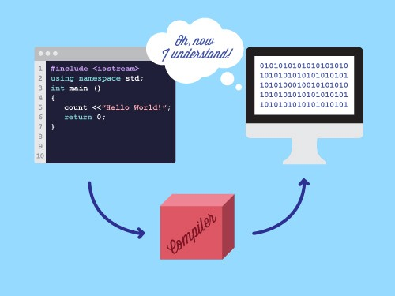

| Een programmeertaal is vaak vrij gemakkelijk voor mensen om te lezen, maar de computer kan de programmeertaal niet lezen en dus ook niet uitvoeren. De code moet eerst worden omgezet naar Machine Code om vervolgens uit gevoerd te kunnen worden. Dit is de taak van een compiler het "vertaalt" een bepaalde programmeertaal naar Machine Code. Compiler kunnen verder worden onderverdeeld in soorten compilers. Als de compiler de code naar Machine Code voor verschillende apparaten (computers, smartphones of een spelcomputer bijvoorbeeld) kan omzetten dan wordt het een cross-compiler genoemd. Als de compiler Machine Code kan omzetten naar een leesbare programmeertaal dan is het een decompiler. |  | ||
Hoe werkt een compiler?Een compiler bestaat uit meerdere delen die allemaal een deel van het werk doen. Het eerste deel is de 'lexical analyzer', het leest de code en verdeeld de tekst in verschillende woorden. Het geeft ook aan om wordt voor soort woord het gaat. Een woord kan bijvoorbeeld een getal, variabele of een rekenkundige bewerking zijn. De ‘lexical analyzer' verzamelt al deze data en geeft deze door aan de volgende stap in het 'compilen' van de code de parser.De 'parser' leest de data van de 'lexical analyzer' en controleert of de syntax correct is. Als de code niet correct is volgens de gespecifieerde syntax van de programmeertaal of er zit een typefout in de code dan geeft het een foutmelding. Als de code echter correct is dan gebruikt de 'parser' de informatie van de 'lexical analyzer' om een 'Abstract Syntax Tree (AST)' te maken. De 'parser' doet dit om de structuur van de code te achterhalen en het wordt hierdoor gemakkelijker om de code naar Machine Code om te zetten. De volgende stap is 'semantic analysis' bij deze stap wordt de AST gebruikt om te analyseren wat er in het geheugen van de computer moet worden opgeslagen, zoals de namen en waarden van variabelen en de namen van de door de programmeur geschreven functies. Na deze stappen is er nog een laatste stap voor de code daadwerkelijk naar Machine Code kan worden omgezet. Deze stap is het optimaliseren van de AST, de AST wordt herschikt. Dit wordt gedaan om bijvoorbeeld dezelfde code uittevoeren met minder instructies en op die manier wordt er ruimte bespaart. Dit is vooral belangrijk voor code met veel instructies. De geoptimaliseerde AST heeft bijvoorbeeld een lange instructie omgezet in een aantal kleinere instructies. Ongebruikte en overbodige code wordt bij deze stap tevens verwijderd. Het laatste wat de compiler nu nog hoeft te doen is aan de hand van de geoptimaliseerde AST de code omzetten in Machine Code dat hetzelfde resultaat bereikt. Programmeurs die compilercode schrijven, proberen deze zo perfect mogelijk te maken. Als de programmeur onjuiste code schrijft, geeft de compiler een foutmelding, maar als de compilercode zelf fouten bevat, kan het moeilijk zijn om uit te maken waar het probleem precies ligt. |
|||